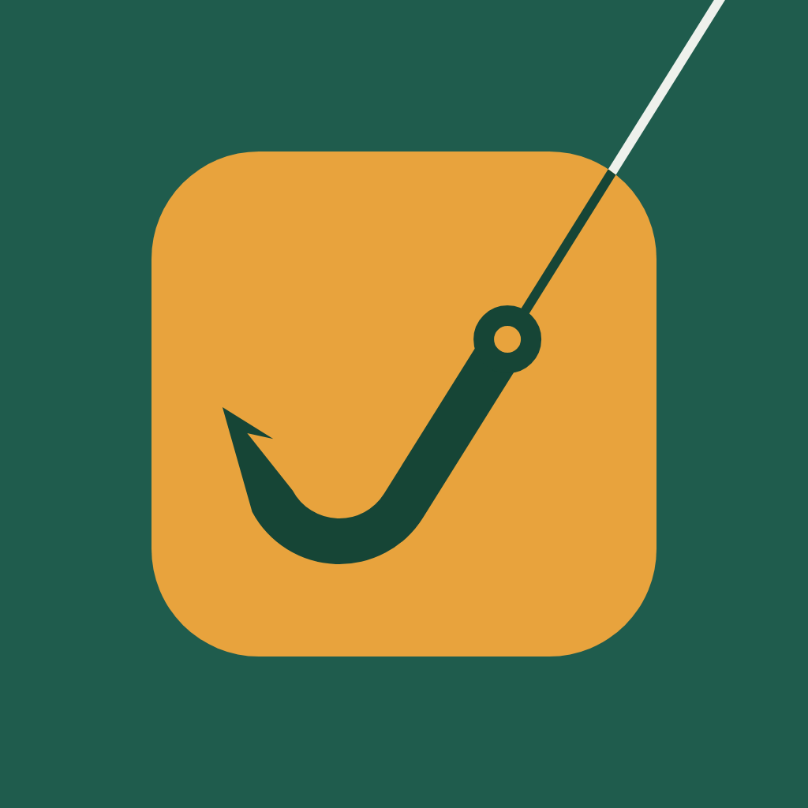

Última atualização: 4 de novembro de 2026
Estes Termos de Serviço («Termos») são um acordo legal entre ti e Dinis Figueiras («nós», «nosso») que regula o uso da aplicação móvel FishingKit (a «App»). Ao descarregar ou usar a App, aceitas estes Termos. Se não concordas, não uses a App.
Esta é a versão em português dos termos. A versão em inglês é a de referência em caso de diferença.
O FishingKit guarda as tuas montagens de pesca como listas de verificação (cana, carreto, linha e material), lembra-se das tuas saídas (o dia, a montagem e o local que marcaste no mapa, com notas opcionais sobre o que resultou) e tem uma lista de desejos com o material que queres comprar. A App não tem contas: os teus dados ficam guardados no teu dispositivo.
Concedemos-te uma licença pessoal, limitada, não exclusiva, intransmissível e revogável para usar a App em dispositivos que possuas ou controles, para fins pessoais e não comerciais, sujeita a estes Termos e às regras de utilização da App Store da Apple ou do Google Play. Não podes copiar, modificar, fazer engenharia inversa, descompilar nem revender a App, nem usá-la para criar um serviço concorrente, exceto quando a lei o permita.
As tuas montagens, saídas e desejos pertencem-te. Ficam guardados no teu dispositivo, por isso não os conseguimos recuperar se o perderes, repuseres ou desinstalares a App. Usa Definições → Exportar uma cópia de segurança com regularidade. Um ficheiro de cópia contém as tuas montagens, saídas (incluindo os locais que marcaste) e desejos, mas não os ficheiros de imagem guardados no teu dispositivo; guarda-o num sítio seguro, pois quem tiver o ficheiro pode lê-lo. Restaurar uma cópia acrescenta o que falta e mantém o que já está no telemóvel; no plano gratuito, preenche apenas os lugares gratuitos de montagens.
Concordas em não: guardar ou partilhar conteúdo ilegal, que viole direitos ou seja prejudicial; tentar interferir com a App ou com qualquer site que ela contacte, ou perturbá-los; usar a App para pedidos automáticos ou excessivos; ou usar a App em violação de qualquer lei.
A App, o seu design e o código pertencem-nos. Os nomes de marcas, nomes de produtos, logótipos e imagens que aparecem na tua lista de desejos pertencem aos respetivos donos. A App não é afiliada nem apoiada por nenhuma loja, marca ou fabricante.
Podemos atualizar, suspender ou descontinuar funções ou a App a qualquer momento. Não garantimos que a App funcione sem interrupções ou erros, nem que os dados de um produto ou os nomes de lugares sejam sempre encontrados.
A App é fornecida «tal como está» e «conforme disponível», sem garantias de qualquer tipo, na máxima medida permitida por lei. Nada nestes Termos limita os direitos que tenhas como consumidor ao abrigo da lei imperativa.
Na máxima medida permitida por lei, não somos responsáveis por danos indiretos, acidentais ou consequentes, perda de dados ou perda de lucros decorrentes do teu uso da App, incluindo decisões que tomes sobre compras, viagens ou segurança, e a nossa responsabilidade total por qualquer reclamação limita-se ao valor que pagaste pela App nos 12 meses anteriores à reclamação. Isto não exclui a responsabilidade que não possa ser excluída por lei.
Podes deixar de usar a App a qualquer momento, desinstalando-a. Podemos suspender ou terminar o teu acesso se violares estes Termos. As secções que, pela sua natureza, devam sobreviver à cessação sobrevivem.
Estes Termos regem-se pela lei portuguesa. Se és consumidor na UE, manténs também a proteção das leis imperativas do teu país de residência. Antes de iniciar um processo formal, contacta-nos para tentarmos resolver a questão. Os consumidores da UE podem também usar a plataforma de resolução de litígios em linha da Comissão Europeia.
Podemos atualizar estes Termos de tempos a tempos. A versão atualizada produz efeitos depois de publicada, com uma nova data de «Última atualização». Continuar a usar a App depois de uma alteração significa que aceitas os novos Termos.
Dúvidas sobre estes Termos: mrkingames00@gmail.com.